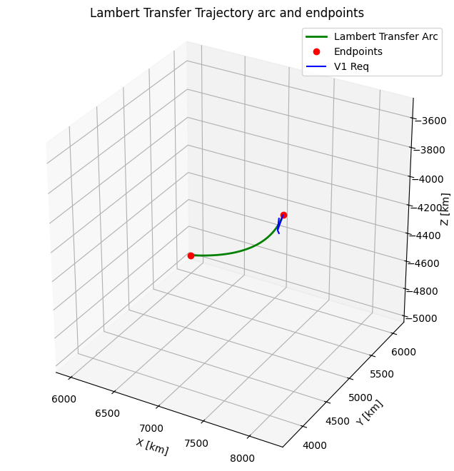

Tutorial 07: Initial Orbit Determination and Lambert’s Problem
This tutorial demonstrates how to determine a spacecraft’s orbit from observations and how to solve for trajectories between two points in space.
1. Initial Orbit Determination (IOD)
IOD is the process of estimating an initial state vector (position and velocity) from a set of observations, usually angles-only (Line-of-Sight) or range-and-angles.
Gauss’s Method
Gauss’s method uses three line-of-sight (LOS) vectors from a single observation site to determine the orbit. It solves eighth-order polynomial for the radius of the middle observation and then uses universal variables to refine the estimate iterative.
Theory Prerequisites
Given three unit vectors \(\hat{\rho}_1, \hat{\rho}_2, \hat{\rho}_3\) and observer positions \(R_1, R_2, R_3\), the satellite position is:
import numpy as np
import matplotlib.pyplot as plt
from opengnc.navigation.iod import gauss_iod
from opengnc.guidance.rendezvous import solve_lambert
from opengnc.utils.state_to_elements import kepler2eci
# Helpers for generating synthetic data
def solve_kepler(M, e):
E = M
for _ in range(10):
f = E - e * np.sin(E) - M
df = 1.0 - e * np.cos(E)
E = E - f / df
if abs(f) < 1e-12:
break
return E
def eccentric_to_true(E, e):
return 2 * np.arctan(np.sqrt((1 + e)/(1 - e)) * np.tan(E / 2.0))
print("Imports successful.")
Imports successful.
1.1 Simulating Observations
We will generate synthetic line-of-sight data from a ground station observing a satellite in an elliptical orbit.
# Target Orbit Parameters
a = 10000e3 # Semi-major axis [m]
ecc = 0.05 # Eccentricity
incl = np.radians(35.0)
raan = np.radians(10.0)
argp = np.radians(20.0)
mu = 398600.4415e9 # m^3/s^2
n = np.sqrt(mu / a**3)
# Observation Times
t2 = 1800.0
dt = 300.0
times = [t2 - dt, t2, t2 + dt]
# Observer Position (Ground Station)
R_earth = 6378137.0
lat = np.radians(30.0)
# Simple fixed observer in ECI for demonstration
R_obs = np.array([R_earth * np.cos(lat), 0, R_earth * np.sin(lat)])
rho_hats = []
Rs = []
true_states = []
for t in times:
E = solve_kepler(n * t, ecc)
nu = eccentric_to_true(E, ecc)
r, v = kepler2eci(a, ecc, incl, raan, argp, nu)
true_states.append(np.concatenate([r, v]))
rho_vec = r - R_obs
rho_hats.append(rho_vec / np.linalg.norm(rho_vec))
Rs.append(R_obs)
true_state_t2 = true_states[1]
print(f"True Position at t2:\n{true_state_t2[0:3]} m")
print(f"True Velocity at t2:\n{true_state_t2[3:6]} m/s")
True Position at t2:
[ 7229038.65030162 5016957.07127293 -4338519.24238726] m
True Velocity at t2:
[-4078.30278898 4314.77193985 -2479.45660733] m/s
1.2 Running Gauss IOD
We pass the line-of-sight vectors and timestamps to the solver.
est_state = gauss_iod(
rho_hats[0], rho_hats[1], rho_hats[2],
times[0], times[1], times[2],
Rs[0], Rs[1], Rs[2], mu
)
print("--- IOD Results ---")
print(f"Estimated Position:\n{est_state[0:3]} m")
print(f"Estimated Velocity:\n{est_state[3:6]} m/s")
pos_error = np.linalg.norm(est_state[0:3] - true_state_t2[0:3])
vel_error = np.linalg.norm(est_state[3:6] - true_state_t2[3:6])
print(f"\nPosition Error: {pos_error:.2f} m")
print(f"Velocity Error: {vel_error:.4f} m/s")
--- IOD Results ---
Estimated Position:
[ 7229038.65030161 5016957.07127288 -4338519.2423872 ] m
Estimated Velocity:
[-4078.08509341 4314.70835693 -2479.43923202] m/s
Position Error: 0.00 m
Velocity Error: 0.2275 m/s
2. Lambert’s Problem
Lambert’s problem is the boundary value problem formulation of orbital mechanics: Given two position vectors \(r_1, r_2\) and a transfer time \(\Delta t\), find the velocities \(v_1, v_2\) at both positions.
Application: Rendezvous
It is the workhorse for calculating intercept trajectories and maneuver \(\Delta V\).
2.1 Solving Lambert Transfer
We will compute a transfer from position A to position B in a specified time.
# Let's use position vectors from our previous orbit
# Transfer from r1 (t1) to r3 (t3)
r1 = true_states[0][0:3] / 1000.0 # Convert to km for solve_lambert
r2 = true_states[2][0:3] / 1000.0
dt_flight = times[2] - times[0] # 600 seconds
mu_km = mu / 1e9 # km^3/s^2
v1_req, v2_req = solve_lambert(r1, r2, dt_flight, mu=mu_km)
print("--- Lambert Solver Results ---")
print(f"Required Velocity at r1: {v1_req} km/s")
print(f"Required Velocity at r2: {v2_req} km/s")
true_v1 = true_states[0][3:6] / 1000.0
print(f"\nTrue Velocity at r1: {true_v1} km/s")
print(f"Velocity Match Error: {np.linalg.norm(v1_req - true_v1):.6f} km/s")
--- Lambert Solver Results ---
Required Velocity at r1: [-3.07789022 4.87135114 -2.98489675] km/s
Required Velocity at r2: [-4.89970477 3.61190438 -1.89490628] km/s
True Velocity at r1: [-3.07789023 4.87135115 -2.98489675] km/s
Velocity Match Error: 0.000000 km/s
2.2 Visualization
Let’s plot the trajectory of the orbit.
from opengnc.propagators.kepler import KeplerPropagator
import numpy as np
import matplotlib.pyplot as plt
fig = plt.figure(figsize=(10, 8))
ax = fig.add_subplot(111, projection='3d')
# Propagate Trajectory Arc
prop = KeplerPropagator(mu=mu_km)
num_points = 100
t_span = np.linspace(0, dt_flight, num_points)
arc_positions = []
for t in t_span:
r_prop, _ = prop.propagate(r1, v1_req, t)
arc_positions.append(r_prop)
arc_positions = np.array(arc_positions)
# Plot Arc
ax.plot(arc_positions[:, 0], arc_positions[:, 1], arc_positions[:, 2], 'g-', linewidth=2, label="Lambert Transfer Arc")
# Plot Endpoints
ax.plot([r1[0], r2[0]], [r1[1], r2[1]], [r1[2], r2[2]], 'ro', label="Endpoints")
# Quiver for velocity vector at r1
ax.quiver(r1[0], r1[1], r1[2], v1_req[0], v1_req[1], v1_req[2], length=100, color='b', label="V1 Req")
# Draw simple sphere for Earth
u = np.linspace(0, 2 * np.pi, 100)
v = np.linspace(0, np.pi, 100)
x = 6378 * np.outer(np.cos(u), np.sin(v))
y = 6378 * np.outer(np.sin(u), np.sin(v))
z = 6378 * np.outer(np.ones(np.size(u)), np.cos(v))
ax.plot_surface(x, y, z, color='cyan', alpha=0.1)
# Adjust View
min_x, max_x = np.min(arc_positions[:, 0]), np.max(arc_positions[:, 0])
min_y, max_y = np.min(arc_positions[:, 1]), np.max(arc_positions[:, 1])
min_z, max_z = np.min(arc_positions[:, 2]), np.max(arc_positions[:, 2])
margin = 50.0 # km
ax.set_xlim([min_x - margin, max_x + margin])
ax.set_ylim([min_y - margin, max_y + margin])
ax.set_zlim([min_z - margin, max_z + margin])
ax.set_box_aspect([1,1,1]) # Equal aspect ratio
ax.set_xlabel('X [km]')
ax.set_ylabel('Y [km]')
ax.set_zlabel('Z [km]')
ax.set_title('Lambert Transfer Trajectory arc and endpoints')
ax.legend()
plt.show()
